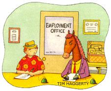

Gus sighed fatalistically. "You can lead a horse to drink. But you can't make him water."
That's my buddy for you: trying to explain life with fractured homespun wisdom. My private nickname for him is Fun Gus, though he hasn't been much lately - fun, that is - since they downsized him at the fungus farm.
"Look, Gus," I entreated, "you've worked 27 years underground in the darkness, surrounded by trays of manure and mushrooms. Anything's got to be a step up."
"I suppose," Gus grudgingly admitted, "but it's hard to sell an old dog new ticks."
See how he talks?
"Oh, I don't know," I responded. "If horses can be retrained for other careers, I'm sure you can be too."
"Ha!"
Sometimes Gus could be pretty pithy.
"No, really." I jutted my chin at a high-stepping standardbred as it trotted past. "I heard about a guy who uses retired trotters for his Central Park carriage rides. I'm not going to lie to you, there were some career transition problems."
"Like what?"
"The first time a jogger came up from behind, the horse wouldn't let him pass. Kept speeding up."
"I bet that made his customers happy."
"Hey, he changed his name to The Pony Express and business boomed. Of course, he needs a stable of joggers to keep things moving."
Gus pondered for a moment. "I see what you're getting at, but I'm a horse of a different collar."
"Everyone can change if they want to. Why, I just read about a couple - the Mayberrys - who retrain thoroughbred racehorses. Those critters spend the first years of their lives learning one thing and one thing only - flat-out running on the flat. After reprogramming, the horses use other gaits, climb hills..."
"I read about them too," Gus broke in. "I heard the lady took her cell phone to the barn, and the first time it rang all the horses busted out of their stalls and headed for the high country. And the only reason they got them back was they kept circling to the left every couple of furlongs."
"Well, there now," I exclaimed. "My point exactly. After that fiasco they started Mayberry Riding Stables for left-handed people with a bad sense of direction. See how you take the best from one skill set and apply it to the next job
Gus smiled politely. "I appreciate your concern about me working and all, Alva, but I just can't imagine what else I could do. Now take you," Gus companionably but pointedly observed. "You've had so many different jobs, you could hardly shake a snake at `em."
"You're right about that," I agreed as we strolled by the draft horses, pausing to watch a young woman hose down a team of monumental Clydesdales.
"You've been changing courses in midstream all your life," Gus pointed out. "You can't expect everyone else to do that."
"Well," I replied a bit defensively, "it's not so much changing as sliding from one related job to another. Take you, for instance. What skills have you cultivated from years of watching mushrooms grow?"
"I've learned to be real patient, and to keep an eye on things as they move along at their own pace."
We both paused to watch the woman follow her outsized charges into the stables. My imagination kicked in.
"How about an escort ser vice?" I suggested.
`Don't know nothing about cars," Gus replied.
I stared at my buddy.
"Oh, that kind of escort service. Seems to me folks are doing a good enough job of matching up around here, one way or another," Gus whispered, winking broadly, "without having to pay someone for it. An escort service in these parts would be about as useful as tights on a boar."
"Geez, Gus. Give me some credit here," I pleaded as we headed for the refreshment wagon spanned with a Real Imitation Lemonade banner. "I'm talking about a magnetic sign I saw on a guy's old beater that said Fosters Escort Service. He was following a manufactured home down the highway."
"Ahh," Gus replied. "One of those oversized load deals. The signed leading the signed."
"Uh-huh. But don't you see? It fits for you. You just said you like to patiently follow the progress of others, right?"
"Yeah, I guess. But my wife is sensitive about her weight."
Sometimes it's hard to follow Gus's thought processes. But what really scares me is when I can. I knew what he was getting at. "It's not permanent, man. You can roll up the 'wide load' sign when you and the wife go shopping. Besides, if the shoe fits for the goose, it fits for the gander," I teased, poking Gus in his ample gut.
He paused, puzzled for a moment. "Something's not right about what you just said. That's not how the saying goes."
I left him pondering and headed for the cattle barn.
"Besides," Gus called after me, "I'm not chicken to cross a new road, you know. I just need to get all my clucks in a row first."
|
 |
|
|